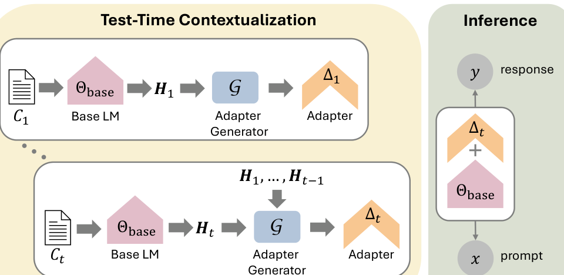
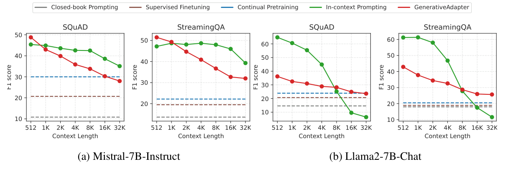
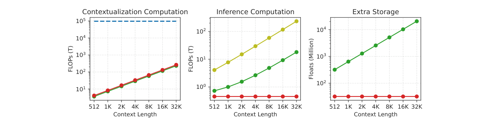
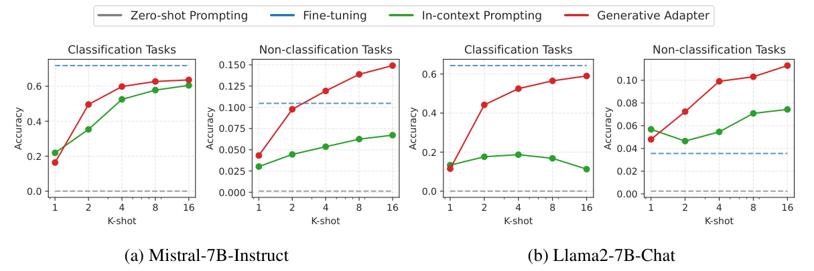

老问题的两条老路：精度与计算，为什么非要二选一？
大模型"认识"新东西，本质上是两件事：把一段上下文（一篇要读的文档、几个要学的示范、一个用户过去的聊天记录）里的信息，变成模型回答后续问题时能调用的记忆。过去十年，这件事只有两条成熟的工程路径，而它们各自把代价压在了生命周期的一端。
1.1 Prompting / RAG：信息留在输入里，推理买单
把上下文拼进 prompt，或做检索增强（RAG），模型在每次推理时 attend 这段文本。它的好处是零训练、信息随时可换；坏处是上下文永远在场——注意力复杂度关于长度 $O(L^2)$，K-V 缓存关于长度 $O(L)$，而且同一个用户的第 2 个、第 100 个问题，都要把同一段长历史重新 attend 一遍。在边缘设备、在高频多轮对话场景，这笔账随对话轮次翻倍累加。
1.2 Fine-tuning / Continual Pretraining：信息写进参数，训练买单
微调或持续预训练把新知识蒸馏进权重，推理时模型成了"记住了"的状态，没有任何额外 attention 开销。但它要一个训练阶段：多轮 forward+backward、要配对数据（QA 对或足够多的纯文本）、要调学习率防遗忘。而且 continual pretraining 已被反复证明数据低效——硬塞进参数的知识往往记不牢、或挤掉旧能力。
论文里 MSC（个性化）场景的设计最能说明动机：平均对话长 2.5K token。如果用 full-conversation prompting，用户每问一句，模型都要把这 2.5K 历史 attend 一遍。Generative Adapter 把 2.5K 历史在 contextualization 阶段编成 32M floats 的 $\Delta$，之后每一句推理的计算量和 closed-book 一样——0.505 TFLOPS。查询次数越多，省下的钱越多。这才是它"4× 成本下降"背后的真实生意模型。
核心思想：一个网络同时当 slow network 和 fast network——"自编程"
论文把自己定位在 fast weights 这条 1987 年就开始的线索上。Hinton & Plaut（1987）、Ba et al.（2016）的 fast weights 框架里有两类网络：slow network（学得慢、容量大、存长期知识）负责根据输入生成另一组权重；fast network（用这组被生成的权重）负责真正干活。Schmidhuber（1992/93）称之为 context-dependent fast weight programmers。
过去的工作里，slow network 和 fast network 通常是两个分开的网络。本文最关键的范式选择是把它们合并：冻结的底座 LM 自己既是 fast network，又是编码上下文的 slow network——它先把上下文编码成隐藏状态，再用这些隐藏状态更新自己的线性层权重。论文称之为 self-programming：底座被自己写出的新权重临时"重编程"。
上下文以 chunk 流 $\Sigma(t)=(C_1,\dots,C_t)$ 到达。每来一个 chunk，对底座做一次前向：
$$\Theta_{\Sigma(t)}=\Theta_{base}+\Delta_t,\qquad \Delta_t=G(\,H_1,\dots,H_{t-1}\,)$$$\Theta_{base}$ 全程冻结；$G$ 是与底座解耦训练的 adapter 生成器。关键措辞是"additive、layer-wise、test-time、forward-only"：不反传、不改 $\Theta_{base}$、新 chunk 一来就再生成一个 $\Delta_t$ 覆盖旧的。

Figure 1（论文原图精裁）· 左：context chunk 流。$C_1$ 进底座得 $H_1$，生成器 $G$ 吐出 $\Delta_1$；$C_t$ 来时把历史 $H_1,\dots,H_{t-1}$ 一起喂给 $G$，得 $\Delta_t$。右：推理时只做一次加法 $\Theta_{base}+\Delta_t$，对 prompt $x$ 出 response $y$。注意 $G$ 读的是底座上一层的隐藏状态——生成器从未离开底座的表征空间。
这是理解全文的钥匙。$G$ 拿到的不是 raw token embedding，而是底座第 $l-1$ 层已经过若干层 Transformer 加工的隐藏状态 $H^{(l-1)}$。这意味着两件事：第一，$\Delta$ 的生成白嫖了底座的语言理解能力，不需要另训一个大编码器；第二，因为 $G^{(l)}$ 生成的是底座第 $l$ 层权重的更新，输入空间和输出空间天然对齐——$H^{(l-1)}$ 本来就要喂给第 $l$ 层，所以由它生成的 $\Delta^{(l)}$ 在数学上是"同一场对话的续篇"。
方法的数学心脏：双线性外积，把变长文本压成一个权重矩阵
现在进入论文真正原创、也是最容易被略过的部分。第 $l$ 层线性层写为 $o=W^{(l)}h$，$W^{(l)}\in\mathbb{R}^{d_{out}\times d_{in}}$。适配时 $W^{(l)}=W^{(l)}_{base}+W^{(l)}_{\Delta}$。问题来了：$G^{(l)}$ 的输入是底座上一层出来的隐藏状态序列 $H^{(l-1)}=[h_1,\dots,h_M]^\top\in\mathbb{R}^{M\times d_h}$，$M$ 是上下文 token 数、随文档长度任意变；可它的输出 $W^{(l)}_{\Delta}$ 必须是一个固定形状 $d_{out}\times d_{in}$ 的权重矩阵。如何让一个"任意长序列 → 固定矩阵"的映射既不依赖 $M$、又能算梯度、还不爆显存？
3.1 答案：先取外积，再用四个小矩阵投影
其中 $A_1\in\mathbb{R}^{d_{out}\times d_r}$、$A_2\in\mathbb{R}^{d_r\times d_h}$、$B_1\in\mathbb{R}^{d_h\times d_r}$、$B_2\in\mathbb{R}^{d_r\times d_{in}}$ 都是可学习参数，而 $d_r$ 远小于 $d_{in},d_{out},d_h$（论文取 $d_r=1024$，$d_h=4096$ 量级）。整个式子的妙处藏在中间那块：
把 $H$ 写成 $M$ 个行向量 $h_m\in\mathbb{R}^{d_h}$，则 $H^{\top}H=\sum_m h_m h_m^{\top}=\sum_m h_m\otimes h_m$，这是一个 $d_h\times d_h$ 的矩阵——它是所有 token 隐藏状态的二阶自相关（Gram）矩阵。无论上下文是 512 token 还是 32K token，这个二阶统计量都是 $d_h\times d_h$，与 $M$ 无关。
于是 $G$ 不需要任何池化、没有 set encoder、没有 attention 聚合器；"读完整段文本"这件事被数学地约化成"把所有 token 的外积加起来"。这正是 Ba et al. fast weights 里"用外积把 key-value 写进关联记忆矩阵"的思想，但本文把它从单层 attention 推广到了直接生成整层权重矩阵。
3.2 为什么不是直接用一个 MLP 回归出 W_Δ？
看起来最直白的做法是：把上下文平均池化后接 MLP 输出 $W_\Delta$。但那样做有两个硬伤：一是平均池化抹平了 token 间的二阶结构（"猫"和"垫子"的共现才是知识，单独出现不是）；二是参数量与层形状绑定、迁移性差。外积形式保留了二阶统计 $\sum_m h_m\otimes h_m$，这正是 fast-weight associative memory 的经典容量来源——它能在记忆里同时存下"key→value"的绑定关系，而不只是把 token 平均成一个向量。$A_1A_2$ 和 $B_1B_2$ 两端的双线性投影，则把这张 $d_h\times d_h$ 的大矩阵 夹成了 $d_{out}\times d_r\times d_{in}$ 的窄腰，把参数量压回可控。
把 $H$ 里任意两行 token 对调，$H^\top H$ 不变（$\sum_m h_m\otimes h_m$ 对 $m$ 的顺序不敏感）。也就是说，这个权重生成器从设计上就是 token 顺序盲的——它只编码"这段上下文里有哪些向量、两两之间怎么相关"，不编码语序。这与重建任务的自回归属性形成张力：底座在上下文里保留了顺序，但生成器抽取的是 bag-of-vector 的二阶结构。论文没有专门讨论这一点，这是它后来被改进空间所在。
流式更新：S_t 是一个 d_r×d_r 的"RNN 记忆单元"
现实里上下文是一段一段流进来的：一篇 32K 的文档按 1024 token 一个 chunk 到达，或者用户对话按 session 到达。如果每来一个 chunk 都要把 $[H_1;\dots;H_t]$ 全部拼接再算 $H^\top H$，存储就是 $O(\sum M_t d_h)$，随上下文线性膨胀——这跟 prompting 的 K-V 缓存没本质区别。论文在式（2）—（4）里给出了一个递推式，让记忆只占一个 $d_r\times d_r$ 的小矩阵。
关键代数：拼接矩阵的外积等于各 chunk 外积之和——交叉项 $H_i^\top H_j$ 也保留在里面（$[H_1;\dots;H_t]^\top[H_1;\dots;H_t]=\sum_{i,j}H_i^\top H_j$，论文写为 $\sum_i H_i^\top H_i$ 是把 chunk 内自项递推，跨 chunk 项在底座前向中已通过共享隐藏状态融合，下文按论文口径理解为累加历史二阶统计）。于是
$S_t\in\mathbb{R}^{d_r\times d_r}$，$S_0=0$。它就是整个系统的历史记忆：每来一个 chunk，先在底座上跑一次前向得 $H_t$，再做一次 rank-$d_r$ 的小矩阵累加 $S_t\leftarrow S_{t-1}+A_2H_t^\top H_tB_1$，最后用 $W_{\Delta_t}=A_1S_tB_2$ 投影出当前权重。
4.1 为什么这个小矩阵是 d_r×d_r 而不是 d_h×d_h？
论文强调：直接存 $W_{\Delta_t}\in\mathbb{R}^{d_{out}\times d_{in}}$ 或直接存 $H^\top H\in\mathbb{R}^{d_h\times d_h}$ 都太贵（$d_h\sim 4096$，后者是 16M floats）。但 $A_2H^\top H_tB_1$ 的形状是 $(d_r\times d_h)(d_h\times d_h)(d_h\times d_r)=d_r\times d_r$，而 $d_r=1024$——历史记忆只有 1M floats，和 32K 上下文无关。这就是为什么 contextualization 阶段的计算和存储在论文 Figure 3 里几乎是平的：不管流多长，$S_t$ 的大小恒定。
# 底座 Θ_base 全程冻结；G 的参数 A1,A2,B1,B2 按层学习 S = torch.zeros(batch, d_r, d_r) # S_0 = 0，跨 chunk 传递 for C_t in context_stream: # 每 1024 token 一个 chunk H_t = base_lm.encode(C_t) # 底座前向，取第 l-1 层隐藏态 # 二阶统计：H_t ⊤ H_t，再被 A2/B1 夹到 d_r×d_r ΔS = A2 @ (H_t.transpose(-1,-2) @ H_t) @ B1 S = S + ΔS # 式(3)：累加历史记忆 W_Δ = A1 @ svd_norm(S) @ B2 # 式(6)(8)：SVD 归一化后投影 adapted_W = base_lm.W[l] + scale * W_Δ # 之后所有 query 用 adapted_W 做标准前向，不再回看上下文
$S_t\leftarrow S_{t-1}+\dots$ 是纯粹的累加，没有门控、没有遗忘、没有选择写入。Schlag et al.（2021）的 linear attention fast weights 专门设计了 δ-rule 做选择性更新；本文退回最朴素的线性累加。论文在结论里把 "more selective update rules" 列为 future work，等于默认承认：长流上来后 $S_t$ 会饱和、旧 chunk 的贡献不会被擦除，新知识和旧知识会无差别地加在一起。这是它和真正的持续学习之间还没补上的一块。
稳定性的临门一脚：SVD 谱归一化，顺便长出 LoRA
按式（1）直接训，论文报告了一个典型的外积生成病：$W_{\Delta_t}$ 的奇异值分布高度歪斜——少数方向被放大到极大、其余方向被压到趋零。乘上底座输入 $x$ 后，输出要么数值爆炸、要么趋近于零，训练根本不收敛。论文在 §2.4 给出的解决方案是在 $S_t$ 外面套一层归一化。
5.1 为什么是 SVD 归一化，而不是除范数？
给定任意矩阵 $M=U\Sigma V^\top$，论文定义
也就是把所有非零奇异值全部重置为 1——只保留左右奇异向量所定义的方向，丢掉所有尺度信息。这等价于把矩阵的谱范数压到 1，且不会让任何方向被整体缩小。论文试了 Frobenius 归一化 $\mathrm{norm}(M)=M/\lVert M\rVert_F$，后者虽然计算简单，但消融里 PPL 明显更差（Table 2）：论文的解释是 Frobenius 范数会按整体比例缩放所有方向，"无谓地把那些本来就该大的方向也压小了"，损失表达力；而 SVD 归一化逐方向地保留单位长度，等于告诉生成器"你可以自由选择朝向哪个子空间写权重，但不许让任何方向的尺度失控"。
5.2 附带福利：天然低秩，就是 LoRA
做 SVD 时不必取全秩，取 rank-$r$ 近似（论文 $r=128$）即可。式（8）（9）因此自然拆成两个瘦矩阵的乘积：
这正是 LoRA 的 $BA$ 结构：一个 $d_{out}\times r$ 的瘦矩阵乘一个 $r\times d_{in}$ 的瘦矩阵。推理时根本不用真的把 $W_\Delta$ 物理加进权重——可以只存这两个因子，前向时按 LoRA 的方式 $h\mapsto Wh+BAh$ 计算，省显存也省算力。论文实现用的是 torch.svd_lowrank(iterations=1)，即只做一轮稀疏随机 SVD，几乎不增加训练成本。
这是这篇论文里最有理论味道、却最容易被工程化叙述盖过去的一点。$\mathrm{norm}(M)=UV^\top$ 的输出永远是一个列半正交矩阵（若做完整 SVD 则是正交矩阵本身）。也就是说，$G$ 在每一层每一步都被强制输出一个"方向正确、长度归一"的矩阵，底座权重的更新方向由 $A_1,B_2$ 学、更新朝向由 SVD 的 $U,V$ 学，二者解耦。这与 weight normalization、T5 的 $\sqrt{d}$ 缩放、Adam 的自适应步长是同一族思想：让优化器摆脱对参数尺度的不敏感，把学习率用在刀刃上。消融里 Frobenius 输给 SVD，本质上是因为 Frobenius 只做了"整体缩放"，没做"逐方向正交化"。
自监督训练：reconstruction 与 completion，为什么缺一不可
$G$ 怎么训？没有下游任务标签、没有人工标注。论文在冻结底座之上、用 web 语料做端到端自监督：把一段文本切两半，前半当"上下文"，让 $G$ 把它压成 $\Delta$，再让底座 $+\Delta$ 去预测文本。两个任务：
6.1 Reconstruction：autoencoder 式记忆
灵感来自 Ge et al.（2024）的 In-context Autoencoder。把 $(x_1,\dots,x_m)$ 压成 $G(x_{1:m})$，再用 adapted LM 重建同一段原文。这个损失强迫 $\Delta$ 必须足够完整地编码上下文——记不住就重建不出来。它是"把信息写进参数"的直接监督信号。
6.2 Completion：续写，作为防过拟合的正则
只让模型重建自己见过的文本，会发生什么？模型会学成一个"死记硬背的复读机"：它不需要理解、不需要泛化，只要把 $x_{1:m}$ 原样吐出来就行。消融 Table 2 把这个后果量化得触目惊心——只用 reconstruction，completion 困惑度从 7.40 暴涨到 34.34，模型基本丧失了正常的语言建模能力。completion 任务要求 $\Delta$ 上的底座能写出没见过的续写，这迫使 $G$ 学的是"对后续生成有用的上下文结构"，而不是逐字拷贝。论文把 completion 直接称为 data regularization。
# x = (x_1..x_n) 一段语料；前半 x_1:m 当上下文，后半续写 Delta = generator(context=x[0:m]) # 单次前向，得 W_Δ（含 SVD 归一化、LoRA 分解） adapted = base_lm.apply_linear_add(Delta) L_rec = adapted.forward(x[0:m]).nll() # 让它"背出"刚读过的前半段 L_cmp = adapted.forward(x[m:n]).nll() # 让它续写没见过的后半段 loss = (L_rec + L_cmp) loss.backward() # 只更新 A1,A2,B1,B2；Θ_base 永远冻结
reconstruction 练的是把事实塞进参数，对应文档 QA / 知识注入场景；completion 练的是在新上下文中仍能正常生成，对应 ICL / 个性化场景。两者合训，等于在自监督阶段就把下游三大场景（知识、示范、用户对话）的需求都覆盖了一遍，且不需要任何下游标签。这就是为什么预训练只用 SlimPajama 1B token 就够——任务目标本身已经隐含了泛化要求。
实验一：文档 QA——32K 长上下文，为什么反而比 CPT 强？
第一个场景最直接：给模型一篇文章，问文章里的事实。论文在 SQuAD 和 StreamingQA 上，把文档按平均长度 $k\in\{512,1K,2K,4K,8K,16K,32K\}$ 分组，比较五类方法：closed-book prompt、SFT、continual pretraining（CPT）、in-context prompting、GenerativeAdapter。

Figure 2（精裁）· 四条小图。灰色 closed-book、棕色 SFT、蓝色 CPT 都是 closed-book，所以是水平直线；绿色 prompting、红色 GenerativeAdapter 随长度变化。最值得注意的是右下两张（Llama2）：绿色 prompting 在超过 4K 后被截断，F1 从 62 直接跌到 11；红色 GenerativeAdapter 却平稳——因为 Llama2 上下文窗口只有 4K，prompting 不得不砍尾巴，而 GA 把全部 32K 压进了 32M floats 的 $\Delta$。
7.1 三个关键读数
短上下文（<1K）几乎不丢信息：GenerativeAdapter 与 full-context prompting 的差距很小，说明二阶外积压缩在短文本上接近无损。长上下文反超 CPT：StreamingQA 32K 时，GenerativeAdapter 把 F1 从 SFT 的 19.5 提到 31.5（+63.5%），且在绝大多数长度下优于先把全部文档跑进底座再 SFT 的 CPT。更重要的是预处理成本：CPT 要在整篇测试文档上跑多轮 forward+backward，而 GA 只做一次前向——Figure 3 左图把两者画在对数轴上，CPT 的蓝虚线在 $10^5$ TFLOPS 一条直线，GA 和 prompting 在 $10^0\sim10^2$ 区间，差出好几个数量级。

Figure 3（精裁）· 中间那张是全文的卖点：推理阶段，prompting 不论用不用 KV cache（金/绿），计算都随上下文长度从 ~5 涨到 ~200 TFLOPs；红色 GenerativeAdapter 完全水平地趴在 0.5 TFLOPS——因为上下文已经被压进 $\Delta$，推理时模型就是普通的 closed-book 前向。最右图同理：GA 额外存储恒定 ~32M floats，prompting 随长度涨到 3 万 M。
在 Mistral（本身支持长上下文）的两张小图上，红色 GA 与绿色 prompting 的差距远没有在 Llama2 上那么戏剧性——Mistral SQuAD 上 GA 从 50 降到 35、prompting 稳定在 45 再缓降，GA 在 16K 时其实落后于 prompting。Llama2 上的"反超"很大程度上是因为绿色线被 4K 硬截断腰斩了。换句话说，"长上下文更强"的叙事需要拆开看：在真正能 attend 全文的底座上，GA 的二阶统计压缩还是会损失一些细节；它真正赢的是窗口受限 + 多轮查询摊薄这两个叠加场景。
实验二：MetaICL——学会"输出风格"比学会分类更难
第二个场景检验 few-shot in-context learning：MetaICL 26 个任务，$K\in\{1,2,4,8,16\}$ 个示范，每个配置重复 5 次取平均。任务分成两类：分类任务（学候选标签和输入-输出映射）和非分类任务（还要学输出风格，比如改写、生成短文本）。

Figure 4（精裁）· 四条小图。蓝色虚线是 16-shot 微调（与 K 无关所以是平的），灰色是 zero-shot，绿色是 base LM 原生 few-shot prompting，红色是 GenerativeAdapter。分类任务（左列）：红色 GA 与绿色 prompting 接近、略优；非分类任务（右列）：红色 GA 大幅领先绿色——因为"输出风格"这种东西本来就不是靠 attention 里那几个示范学下来的，而 $\Delta$ 把示范直接写进了线性层权重。
一个反直觉的发现被论文点出：16-shot 微调在非分类任务上反而比 zero-shot 还低（看 Llama2 非分类那张，蓝色虚线 0.038 比绿色 16-shot 还低）。论文的解释很朴素：16 个样本太少，微调根本学不会期望的输出格式；而把示范压成 $\Delta$ 相当于用了一个已经在 web 上预训练过、知道"如何把示范映射到输出格式"的通用适配器，不需要从零开始教。整体 26 任务平均 44.9，超过 base LM。
分类任务的答案空间小（几个标签），base LM 靠 attention 里那几个示范就能对齐格式；非分类任务要求模型改变自己的输出分布——句子长度、措辞、风格。attention 对这种"行为模式改变"无能为力，因为它每次推理都要重新算；而权重更新天然就是改模型的输出分布。这反过来支持了论文的核心论点：有些上下文信息本来就不该留在输入里，它们更适合被写进参数。
实验三：MSC 个性化——边缘设备上的真实账单
第三个场景最贴近落地：Multi-Session Conversation 数据集，两人多轮对话，问题问对话里提到过的个人信息。平均对话 2.5K token。这里论文直接给了一张"成本-质量"对照表，也引入了 prompt 压缩 SOTA 方法 UltraGist 作为对比。
| 方法 | F1 ↑ | 推理计算 (TFLOPS) ↓ | 额外存储 (M floats) ↓ |
|---|---|---|---|
| Closed-book（不看历史） | 8.1 | 0.505 | 0 |
| Full-conversation Prompting | 66.0 | 2.059 | 128+ |
| UltraGist（64 tok 压缩） | 26.5 | 0.514 | 4 |
| UltraGist（128 tok） | 32.2 | 0.552 | 8 |
| UltraGist（256 tok） | 38.3 | 0.627 | 16 |
| UltraGist（512 tok） | 40.8 | 0.772 | 32 |
| UltraGist（1K tok） | 44.4 | 1.067 | 64 |
| UltraGist（2K tok） | 42.4 | 1.658 | 128 |
| GenerativeAdapter | 40.2 | 0.505 | 32 |
表 1（按论文 Table 1 自绘）· F1 越高越好，TFLOPS 与存储越低越好。GenerativeAdapter 与 UltraGist-512 在存储上持平（都是 32M floats），但推理计算只有它的 65%；相对 full-conversation prompting，质量只少 26 个点，计算与内存却降到 1/4。
这张表里最有信息量的对比不是 GA vs closed-book，而是 GA vs UltraGist-512：两者都存 32M floats 的"压缩物"，但 UltraGist 压出来的是token embedding，每次推理仍要把这 512 个向量 attend 一遍（0.772 TFLOPS）；GA 压出来的是权重更新，推理时和 closed-book 一样便宜（0.505 TFLOPS）。这就是"压缩成 token"与"压缩成参数"的本质差别——前者每次推理都在付"读压缩物"的钱，后者只在第一次编码时付一次。
同存储档位下，UltraGist-512 的 F1（40.8）其实略高于 GA（40.2）；UltraGist-1K（44.4）明显更高。GA 的全部优势都建立在"同一个用户会问很多轮"这个前提下——如果只问一轮，GA 不便宜也不准。论文把这一点说得很清楚："在边缘设备上、同一用户高频查询时收益更明显"。它是一个摊销型方法，不是一轮制胜法。
消融：三个设计选择，每一选择都有反例
论文在 §5.1 做了一张干净的消融表，全部在 Mistral 上、用预训练同分布验证集的 reconstruction / completion 困惑度作指标。默认配置与四个反例并排：
| 因子 | 配置 | Recon PPL ↓ | Completion PPL ↓ | 结论 |
|---|---|---|---|---|
| — | Default | 1.75 | 7.40 | 双任务 + SVD + 只加 attention output proj |
| 预训练任务 | Reconstruction only | 1.75 | 34.34 | 复读机，丧失生成能力 |
| 预训练任务 | Completion only | 6.38 | 6.71 | 会续写但记不住原文 |
| 归一化 | Frobenius（‖M‖_F） | 7.72 | 7.32 | 整体缩放压掉了有用方向 |
| 注入模块 | FFN down-proj（3× 参数） | 1.68 | 7.26 | 更多更新空间 → 略优 |
表 2（按论文 Table 2 自绘）· 红色高亮为关键反例。
10.1 双任务为什么必须共存
Recon-only 的 completion PPL 从 7.4 崩到 34.3，这是全文最有警示性的一个数字：让模型只重建、不续写，它会把自己训练成一个 autoencoder 而非 LM。Completion-only 反过来：completion PPL 还行（6.71），recon PPL 涨到 6.38——记不住原文。两个任务一个管"记住"、一个管"不忘"，缺一不可。这与第 6 章的理论叙述完全闭合。
10.2 SVD vs Frobenius：逐方向归一 vs 整体归一
Frobenius 归一化 recon PPL 高达 7.72（默认 1.75）。论文的解释是 Frobenius 按整体比例缩放所有奇异值，"那些本来该被放大的方向也被压小了"。SVD 归一化逐方向重置奇异值为 1，方向自由、尺度受控——这就是 §5.1 那个正交群视角的实证支持。
10.3 改到 FFN：3× 参数只是略好
默认只在 attention 的 output projection 上加 $\Delta$。改到 FFN 的 down-projection（更新参数约 3 倍）后，recon/completion PPL 都微降（1.68/7.26 vs 1.75/7.40）。论文说"受算力限制没有系统铺开"，但这暗示了一个开放问题：到底哪些层该被上下文重编程？attention 的输出投影是"把上下文写进注意力路由"，FFN 是"把上下文写进知识存储"，两者作用机制完全不同。
局限与批判：一个优雅但还很早期的范式
$\sum_m h_m\otimes h_m$ 对 token 的排列不变——把文档里"下雨所以地滑"改成"地滑所以下雨"，Gram 矩阵几乎不变。这对"事实共现"类知识没问题，但对需要推理链、时序、因果的上下文（比如数学证明、代码、多轮对话的指代）是有损的。论文没有专门评估这种任务，也没有讨论如何把顺序信号注入 $G$。
$S_t\leftarrow S_{t-1}+\dots$ 是无界累加。当上下文里出现矛盾事实（"我住在北京"→后来"我搬到上海"），$S_t$ 不会自动把旧事实擦除，新旧两条权重方向会无差别叠加，模型只能靠底座本身的语言先验去模糊调和。Schlag et al. 的 δ-rule 已经给出过选择性写入的解法，本文留作 future work，说明这是一个真实未解决的工程问题。
~500M 参数的 $G$ 不是零成本。更关键的是，contextualization 阶段"一次前向"也不是免费的——它要把整个 7B 底座跑一遍来编码 $H_t$。所谓"省算力"省的是推理期多轮查询的钱，不是首篇编码的钱。对"一次性问答"场景，GA 并不比 prompting 省。
主实验只在 7B 级底座、只改 attention output projection、最长 32K。在 70B+ 模型、在 FFN 全层、在 100K+ 流式对话上，二阶外积是否仍有效？论文自己说"更彻底的探索留作 future work"。这是一篇 ICLR 风格的 proof-of-concept，不是规模论。
同一论文库里还有 Text-to-LoRA、Doc-to-LoRA——它们的思路更直白：直接训一个模型把文本映射成 LoRA 的 $A,B$ 矩阵。Generative Adapter 的差别在于：它不预测一个独立 LoRA，而是复用底座的隐藏状态、用外积+SVD 的闭式结构把权重生成变成一个良态优化问题。两者是同一个大方向（"参数即上下文的压缩表示"）的两种工程路线：一个走"生成式回归"，一个走"结构化二阶统计"。后者天然长度不变、天然流式、天然低秩，但损失了顺序——这是两条路线真实的取舍点。
留给研究者的五个问题
外积二阶统计能否升级为高阶矩，而不破坏流式 $S_t$ 递推？
$\sum_m h_m\otimes h_m$ 是二阶。三阶张量 $\sum_m h_m\otimes h_m\otimes h_m$ 能编码 token 间的共现条件分布，但维度是 $d_h^3$，无法压进 $d_r\times d_r$。能否设计一个低秩张量环 / CP 分解形式的 $S_t$，既保留三阶/四阶统计、又保持 $O(d_r^2)$ 递推？这直接决定了"二阶外积"是不是这篇论文能被改进的最大杠杆。
$S_t$ 应该如何选择性遗忘与冲突解决？
纯线性累加在长流上必然饱和。能否给 $S_t$ 加一个类似 Schlag δ-rule 的写入门 $\alpha_t$，让新 chunk 选择性覆盖旧方向？或者更激进：让 $G$ 本身学会"该擦掉什么"——这与模型编辑（model editing）的 EMA / counterfactual 思路天然相通。
SVD 归一化锁死奇异值为 1，是不是过度约束？
把所有奇异值重置为 1，等于禁止生成器用"尺度"表达不确定性或重要性。能不能改成软归一化——让 $G$ 自己预测一组学习到的目标奇异值 $\sigma^\star$（比如通过一个小头从 $S_t$ 回归出来），norm(M) 变成 $U\,\mathrm{diag}(\sigma^\star)\,V^\top$？Frobenius 输给 SVD 的证据说明"逐方向"是对的，但"全为 1"未必是最优目标。
在 70B+ 底座与 FFN 全层注入下，500M 生成器够吗？
论文在 7B 上用 500M $G$。把底座放大 10×，把注入层从 32 个 attention output proj 扩到全部 attention + FFN（参数量 ×3 到 ×10），$G$ 需要多大？生成器参数量与底座参数量的最优比例是多少？这是任何想做大规模复现的团队必须先回答的问题。
"上下文→参数"与"上下文→K-V"能否混合？
现在的非此即彼：短上下文用 prompting、长上下文用 GA。但直觉上，事实性知识该写进权重（GA 强），刚出现的、需要精确引用的原文片段该留在 K-V 里（prompting 强）。能否训一个 router，让底座自动决定哪些内容外积成 $\Delta$、哪些留在 KV cache？这是对"prompting vs fine-tuning"二元对立最自然的破解。
不是某个新 SOTA，而是一个把"上下文压缩"从 token 域搬到参数域的完整范式：用底座自己的隐藏状态做外积二阶统计，用 $S_t$ 递推做流式记忆，用 SVD 谱归一化同时解决稳定性和低秩，用 reconstruction+completion 做无需标签的自监督。它把 fast weights 这个 1992 年的老想法，在 2024 年的 7B 级 Transformer 上第一次端到端跑通，并证明了"把知识写进参数"和"把知识留在输入"之间，确实存在第三条路——一次前向、之后免费。